Abstract
Teams of drones must coordinate under tight onboard compute and memory budgets and keep adapting after deployment, yet deep multi-agent reinforcement learning relies on replay buffers and large batch updates that are costly on board and assume stationary data. Streaming reinforcement learning avoids both by learning from each transition once, as it arrives, but has been limited to single agents. We introduce two multi-agent extensions of Stream AC(λ): iStream-AC, which is fully decentralized, and cStream-AC, which uses a centralized critic during training. We evaluate them on multi-UAV formation tracking in a MuJoCo warehouse, where each drone acts only on camera detections of a moving target. Both variants learn faster than IPPO and MAPPO and reach comparable final return. The independent critic matches the centralized one, so training can remain fully decentralized. A curriculum over detection dropout and noise makes the policies robust to perception errors, and across a sequence of tracking, waypoint, and landing tasks, Stream AC adapts quickly and retains the plasticity to relearn after forgetting. These results show that streaming learning is a practical alternative to batch methods for drone teams that must keep learning on board.
Highlights
Environment
A multi-UAV target-tracking environment in MuJoCo with the Skydio X2 drone, mimicking a factory where drones track a moving robot. Each drone takes a normalized action \([v_x, v_y, \dot\psi] \in [-1, 1]^3\), scaled to a maximum speed of 2 m/s, at a fixed altitude. Its observation is only the camera detection of the target, \([\text{visible}, c_x, c_y, w, h]\), so the policy learns control, not perception.
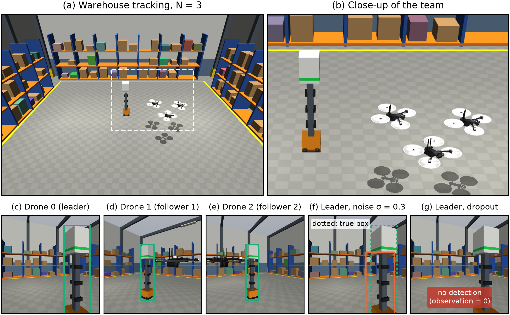
Each drone \(i\) receives a reward \(r_i\), and the team the shared reward \(R\):
\(d_i\) is the distance to the drone's desired position (1.5 m from the target for the leader) and \(\psi_i\) the angle between its heading and the target, so a drone is only rewarded when it also faces the target, its only sensor. A collision (drones closer than 0.6 m) or leaving the arena gives \(R = -10\) and ends the episode.
Method
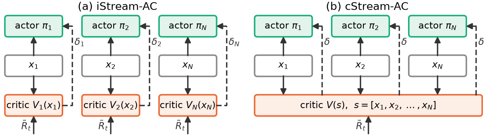
Both variants share the same actors and optimizer. Each drone's input \(x_i\) stacks its last 4 observations and its previous action. Actors are Gaussian MLPs with two hidden layers of 128 units and sparse LeCun-uniform initialization, trained with the Stream AC(λ) defaults, without tuning. They differ only in the TD error used to update the critic:
iStream-AC
Fully decentralized. Each drone treats its teammates as part of the environment and learns its own critic \(V_i(x_i)\), so training needs only the drone's own observations and the team reward.
cStream-AC
Centralized training, decentralized execution. A single critic \(V(s)\) takes the joint state \(s = [x_1, \dots, x_N]\) and computes one team TD error. Actors still use only their own inputs.
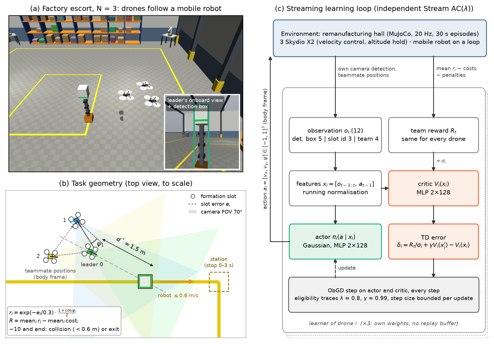
Rollouts
Policies of each method on the three tasks, \(N = 3\).
Scaling with team size
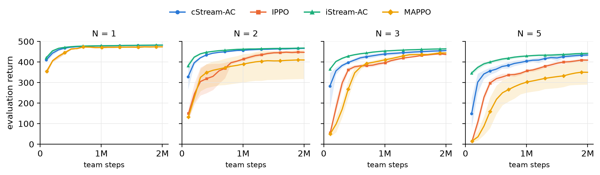
Each streaming method is paired with its batch counterpart using the same critic information (iStream-AC vs IPPO, cStream-AC vs MAPPO), so any difference within a pair comes from streaming versus batch learning. With one drone all methods converge to similar returns (474–482). As the team grows, each drone must account for teammates that are still learning, and streaming updates, which always use the most recent transition, respond to teammates' current behavior rather than stale data.
| N | Method | Return ↑ | Form. [m] ↓ | Head. [°] ↓ | Stand. [m] ↓ |
|---|---|---|---|---|---|
| 2 | iStream-AC | 468.0 ± 4.5 | .019 ± .003 | 5.3 ± 1.7 | .016 ± .004 |
| cStream-AC | 466.5 ± 2.1 | .020 ± .002 | 6.7 ± 0.7 | .016 ± .001 | |
| IPPO | 447.1 ± 8.1 | .031 ± .005 | 4.9 ± 2.8 | .019 ± .003 | |
| MAPPO | 409.6 ± 102.6 | .355 ± .741 | 15.2 ± 29.2 | .019 ± .007 | |
| 3 | iStream-AC | 464.1 ± 3.7 | .021 ± .002 | 6.1 ± 2.2 | .019 ± .003 |
| cStream-AC | 455.5 ± 7.5 | .027 ± .005 | 6.3 ± 1.8 | .019 ± .004 | |
| IPPO | 436.6 ± 5.4 | .040 ± .002 | 3.9 ± 1.6 | .023 ± .004 | |
| MAPPO | 444.0 ± 4.4 | .033 ± .003 | 2.1 ± 0.6 | .021 ± .002 | |
| 5 | iStream-AC | 441.8 ± 7.3 | .033 ± .005 | 14.0 ± 1.1 | .019 ± .002 |
| cStream-AC | 433.8 ± 10.7 | .041 ± .006 | 7.8 ± 4.9 | .025 ± .004 | |
| IPPO | 409.2 ± 7.6 | .061 ± .007 | 3.3 ± 1.2 | .042 ± .010 | |
| MAPPO | 349.9 ± 75.5 | .404 ± .543 | 7.7 ± 2.5 | .038 ± .014 |
The independent critic matches the centralized one at every team size, with lower variance across seeds: a team trained with iStream-AC needs no communication beyond the shared reward. Collisions and out-of-bounds events occur in at most 0.2% of episodes.
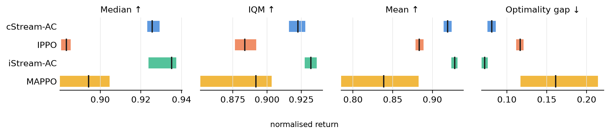
Robustness to perception errors
Policies act only on detections, so detector errors propagate directly to the controls. We corrupt each drone's detection at every step: with dropout probability \(p\) it is replaced by zeros, and with noise level \(\sigma\) Gaussian noise is added to the box.
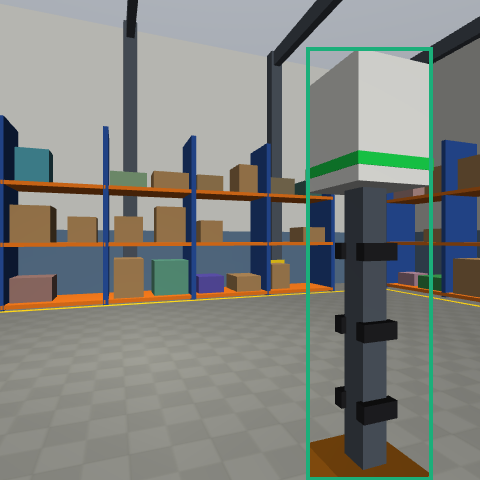
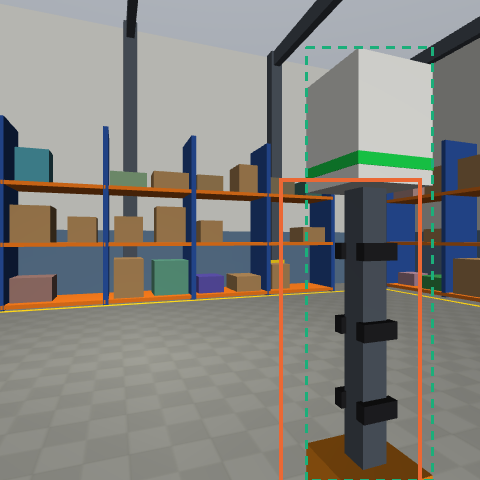
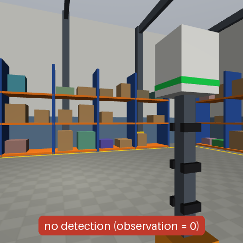
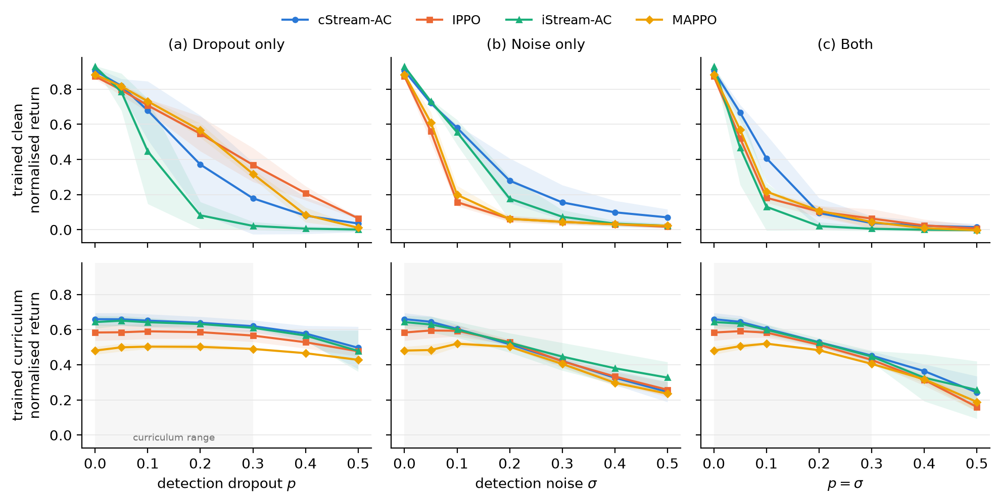
Policies trained on perfect detections are fragile: they perform well without corruption (0.87–0.93) but degrade quickly. A curriculum that raises dropout and noise linearly to 0.3 costs some clean performance but makes every method robust: at \(p = \sigma = 0.3\), curriculum policies reach 0.41–0.45, versus at most 0.06 with clean training, and Stream AC still reaches about 0.5 at \(p = 0.5\), beyond the training range.
Full dropout × noise grid

Continual learning
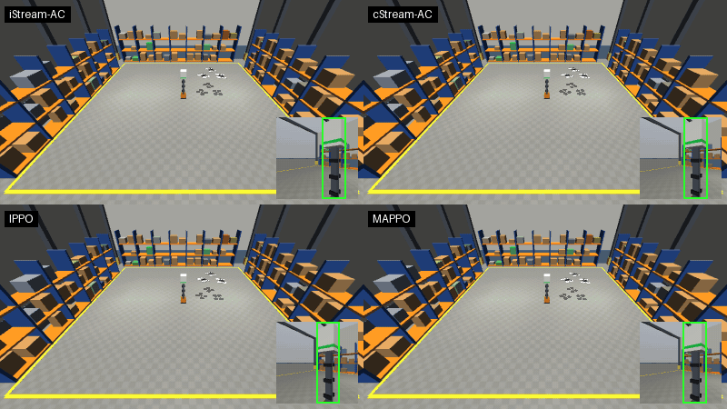
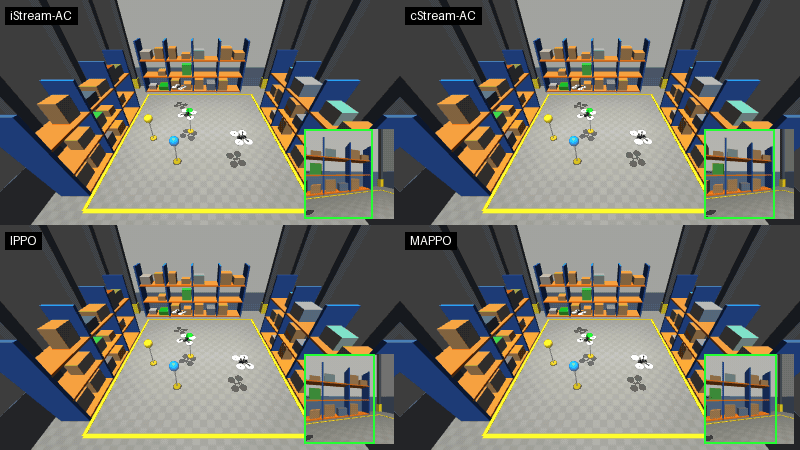
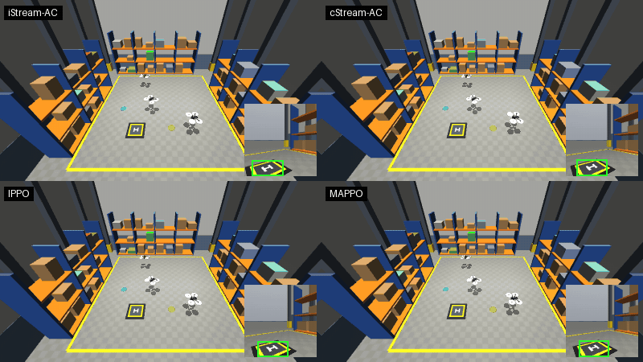
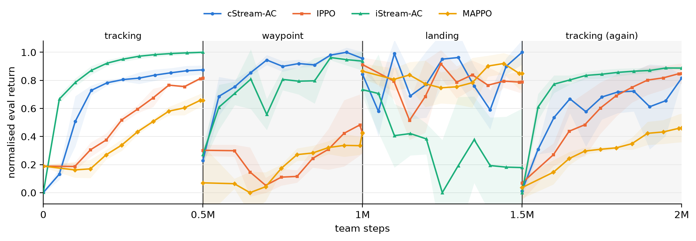
Three drones train on tracking, waypoint, landing, then tracking again, with networks and observation statistics carried across switches. Both Stream AC variants nearly reach full return on waypoint, while IPPO and MAPPO stay below 0.5. When tracking returns, every method starts near zero, but iStream-AC is back to 0.6 within 50k steps: Stream AC keeps the plasticity to relearn after forgetting. Landing remains hard, and iStream-AC collapses there.
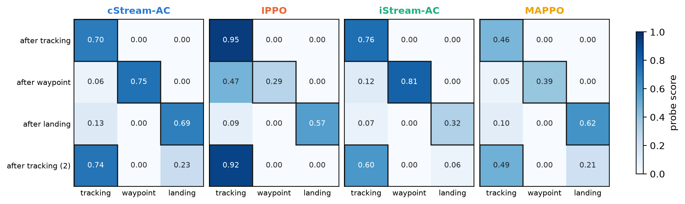
Compute
Measured on a Ryzen 7 3700X CPU, since onboard drone computers typically lack a GPU. Both learners use similar memory (≈ 0.8–1.1 MiB), but Stream AC needs no buffer. PPO is faster on average (0.43 vs 1.5 ms per step), yet its batch updates spike to 45 ms, 90% of the 50 ms control period, while Stream AC stays below 2.6 ms.
Limitations: evaluation is in simulation with ground-truth detections, iStream-AC fails on landing, and forgetting across tasks remains. Future work will address these on real drones with an onboard detector.